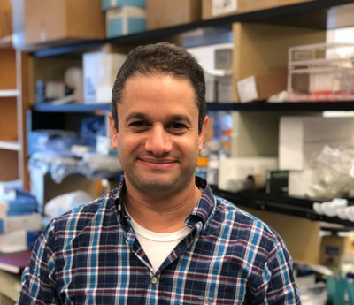

Mini-conference: Charting human biology using AI for Precision Health & Precision Medicine
Location
238 Main Street, Cambridge, MA, 02139
6th floor conference space where Bayer’s office is located.
Time
Nov 16th, 9am - 4:15pm
What is it about?
The human biology is arguably one of the most precious complex systems in existence that is both multi-scale and highly dynamic in nature. Though a full understanding of such a system eludes us at the present, modern medicine relies on sophisticated biosensors and data analytics methods. Generation of actionable insights into health and disease requires an interdisciplinary effort bringing together domain scientists and technologists.
With the unprecedented growth of available molecular assays (e.g. single cell m’omics, spatial omics, proteogenomics, and so on) and increasing availability of real world data, there is an essential need to develop methods and expertise in multi-omics analysis and integration, specially using ML/AI to bring together prior knowledge, disease biology and clinical data to actionable insights for drug discovery, diagnostics and prediction of response and resistance to treatments.
In this mini-conference, we will focus on multi-omics technologies and corresponding novel analytics approaches to help build integrative models of the systems biology in order to understand the healthy state and transition into a disease state, and how that differs between subgroups of individuals leading to development of more effective interventions specific to each subgroup.
Confirmed keynote speakers

Dr.Etai Jacob is the Senior Director, Head of Data Science and AI, Early Oncology at AstraZeneca.
Dr. Sherlock Hu, the CIO of GV20 Therapeutics, earned his Ph.D. in Computer Science from the Chinese University of Hong Kong. He later pursued postdoctoral training in Prof. Shirley Liu’s lab at Dana-Farber Cancer Institute and Harvard University. In 2019, he was named Parker Scholar by the Parker Institute for his innovative work in mining tumor-infiltrating B cell receptor repertoires. Dr. Hu’s expertise in Computational Biology and Immunology underpins GV20’s AI platform, enabling the deep learning-based de novo design of fully human functional antibodies. At GV20, Sherlock leads the bioinformatics and AI teams, spearheading AI-driven antibody drug design.
Talk Title:
AI for Target Identification and Antibody Discovery.
Abstract:
In cancer research, the exploration of innovative strategies for identifying therapeutic targets and developing effective treatments remains paramount. This presentation delves into a novel approach that harnesses the power of artificial intelligence (AI) to revolutionize cancer therapeutics. By modeling the intricate landscape of antibody-antigen interactions within the tumor microenvironment, our research strives to uncover new treatments derived from patients’ immune systems.
Central to our methodology is the integration of AI, which enables the rational discovery of cancer targets and functional antibodies. As an example, we present a first-in-class antibody drug that exhibits an excellent pre-clinical profile and is currently advancing through clinical trials. Our findings not only shed light on the intricate web of interactions within the tumor microenvironment but also underscore the viability of AI-driven strategies in addressing challenging issues in precision medicine.)
James Lindsay is the Director of Software Engineering in the Department of Data Science at the Dana-Farber Cancer Institute. He helps build software to facilitate precision cancer medicine such as automated clinical trial matching, clinical DNA sequencing and next generation digital pathology imaging. Additionally he helps build software for cancer genomics research including the cBioPortal.
Talk title:
Leveraging artificial intelligence predictions of treatment change to time out reach for enrollment in precision medicine clinical trials.
Abstract:
MatchMiner is an open source platform for cancer precision medicine, supporting clinical trial enrollments at Dana-Farber Cancer Institute. Clinical trials in precision oncology frequently face challenges with patient enrollment, partly due to the difficulty of finding patients which simultaneously meet eligibility criteria and are ready to change treatment. To address these challenges we initiated a study using AI tools to assist in identifying the right time to alert a physician about patient eligibility.
Other confirmed speakers
John Gaspar Data Science and Bioinformatics Team Lead at Merck.
Shantanu Singh Principal Investigator and Sr. Group Leader at Broad Institute of MIT and Harvard.